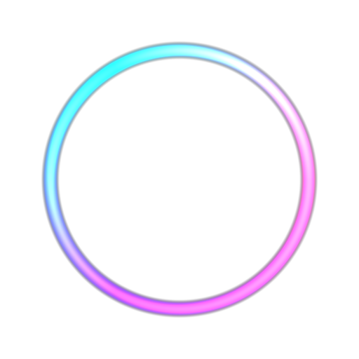
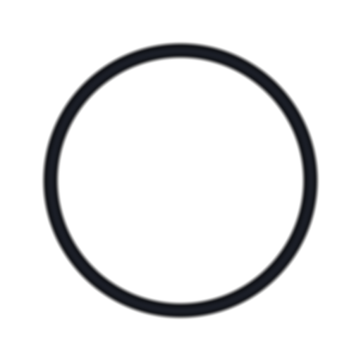
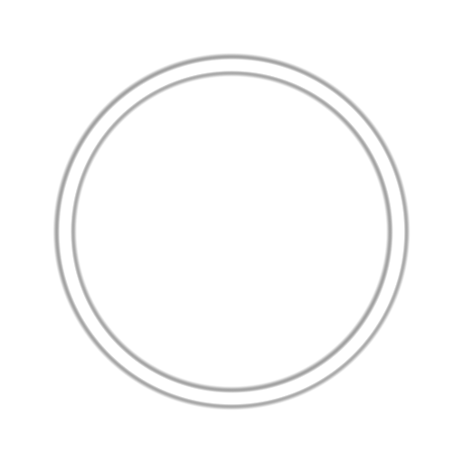
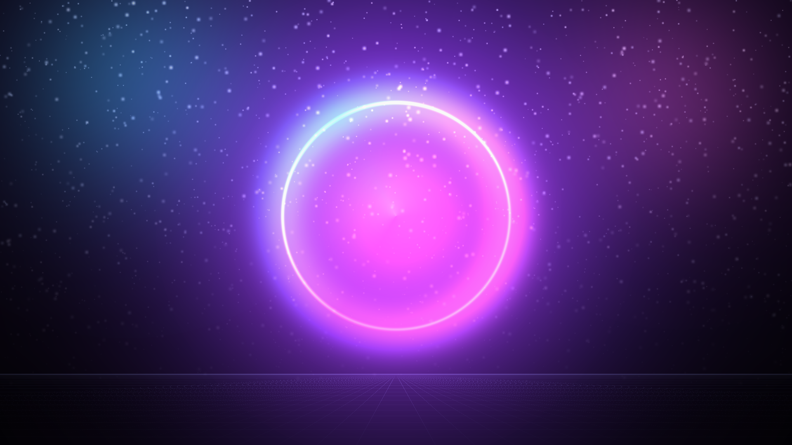
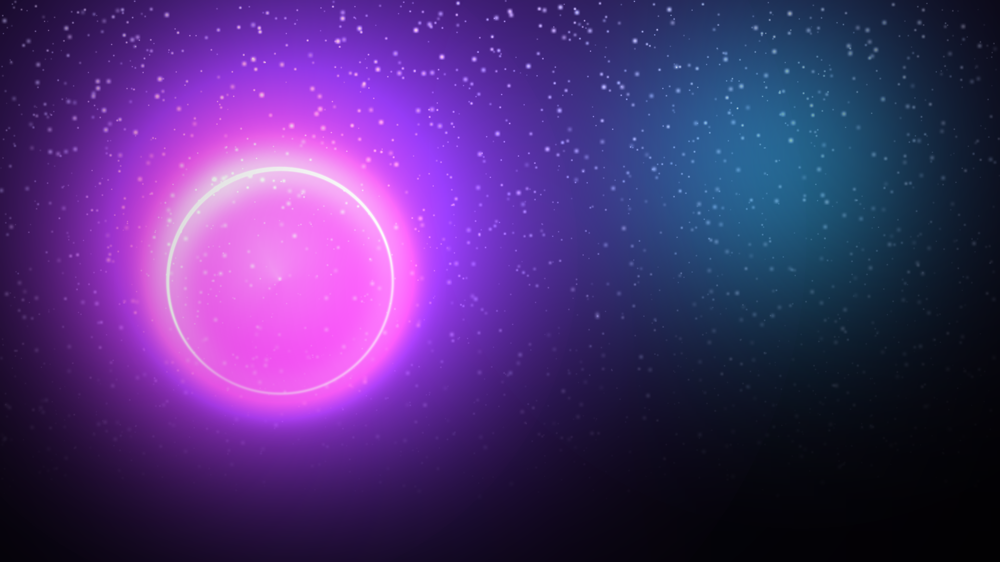
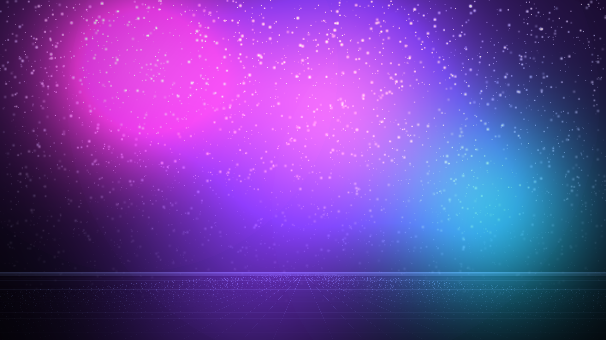

Generated brand assets — 0.1.0 Alpha. Palette source of truth: config/branding.env.






python3 branding/tools/render_assets.py.
These PNGs are build inputs for plymouth, GRUB, LightDM and the XFCE wallpaper.